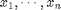
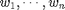
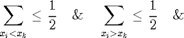
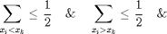

GEODESICFILT_BASE - Base function for GEODESICFILT.
Contents
Syntax
F = GEODESICFILT_BASE(I, method, iter, wei, winsize, a, ...
rho, sigma, der, int, samp, eign);
See also
Ressembles: GEODESICFILT, ADAPTIVEFILT_BASE, TENSANIFILT_BASE, TENSCALEDIRFILT_BASE, MDLFILT_BASE, CONVOLUTION_BASE, FMMISOPROPAGATION, FMMANISOPROPAGATION, FMM_BASE, PDEM. Requires: POTENTIAL2FRONT, IM2POTENTIAL, WEIGHTFILT_BASE.
Function implementation
function F = geodesicfilt_base(I, method, iter, wei, winsize, a, rho, sigma, ... der, int, samp, eign)
checking/setting parameters
% we also accept variable number of inputs if nargin<=11 eign = 'zen'; if nargin<=10, samp = 1; if nargin<=9 int = 'fast'; if nargin<=8, der = 'fast'; end end end end
consider the iterative application of the algorithm
if iter>1 F = I; for i=1:iter F = geodesicfilt_base(F, method, wei, winsize, rho, sigma, ... a, 1, der, int, samp, eign); end return end
internal parameters
[X,Y,C] = size(I); % the window of analysis: should be odd winsize = round( (winsize-1)/2 )*2 + 1; % center of the window padnum = (winsize-1)/2; % padnum = max([(winsize-1)/2 ceil(3*sigma) ceil(3*rho)]) % padd the original image for convenient processing A = padarray(I,[padnum padnum],'replicate','both'); % create the output filtered image F = zeros(size(I)); % over each local window, the value of the central pixel is estimated; it is % also used as the starting point for local propagation start_pt = [padnum+1;padnum+1];
compute once for all the potential function based on the gradient and/or the gradient structure tensor of the multispectral input image and define the propagation function: it is either a scalar field (isotropic case) providing with the speed (strenght) for the propagation (the higher the value at one point, the faster the propagation through this point) or a tensor field (anisotropic case) providing with a speed and a direction for the propagation.
T = im2potential(A, method, a, rho, sigma, der, int, samp, eign);
define the weighting function (see also function WEIGHTFILT_BASE)
if wei==0, weighting = @wmedweight; elseif wei>0, weighting = @gaussweight; else weighting = @scaleweight; end
perform local filtering: FMM is applied locally from the center of the window of analysis in orint to compute local distances from it; those distances are then weightened as to convolve the image locally; the final output value is assigned to the central pixel
estimation on local neighbourhoods
for jj = padnum+1:(padnum+X) for kk = padnum+1:(padnum+Y) xspan = jj-padnum:jj+padnum; yspan = kk-padnum:kk+padnum; % compute the matrix defining the metric: the geodesics will follow % regions where T is 'large'. Dwin = potential2front(T(xspan,yspan,:,:), start_pt); % Dwin = Dwin /max(Dwin(:)); for i=1:C Awin = A(xspan,yspan,i); % if i==1&&kk==20 &&jj==20 % figure, % subplot(1,2,1), imagesc(rescale(Awin)), colormap gray, axis image % subplot(1,2,2), imagesc(Dwin), colormap gray, axis image % end F(jj-padnum,kk-padnum,i) = weighting(Awin(:), Dwin(:), wei); end end end % % another way to do it: it uses the already implemented FMM_BASE function, % % but implies many variable tests at each step of the loop % for jj = padnum+1:(padnum+1+X-1) % for kk = padnum+1:(padnum+1+Y-1) % Dwin = fmm_base(T(jj-padnum:jj+padnum,kk-padnum:kk+padnum,:,:), ... % 'sing', false, start_pt, [], O, [], Inf); % for i=1:C % Awin = A(jj-padnum:jj+padnum,kk-padnum:kk+padnum,i); % F(jj-padnum,kk-padnum,i) = weighting(Awin(:),Dwin(:),p); % end % end % % end
end % end of geodesicfilt_base
Subfunctions
GAUSSWEIGHT - Gaussian-based weighting function
%-------------------------------------------------------------------------- function k = gaussweight(Awin, Dwin, a) Dwin = exp( - a * Dwin ); t = sum(Dwin); if(t>0), Dwin = Dwin/t; end k = sum(Awin.*Dwin); end % end of gaussweight
WMEDWEIGHT - Weighted median-based weighting function. For n
numbers 
with positive weights 
(sum of all weights equal to one) the weighted median is defined as the
element  , such
that: 
, such
that: 
%-------------------------------------------------------------------------- function k = wmedweight(Awin, Dwin) Dwin = Dwin / max(Dwin(:)); % (line by line) transformation of the input-matrices to line-vectors d = reshape(Awin',1,[]); w = reshape(Dwin',1,[]); % sort the vectors A = [d' w']; ASort = sortrows(A,1); dSort = ASort(:,1)'; wSort = ASort(:,2)'; l = length(wSort); sumVec = zeros(1,l); % vector for cumulative sums of the weights for i = 1:l sumVec(i) = sum(wSort(1:i)); end k = []; j = 0; while isempty(k) j = j + 1; if sumVec(j) >= 0.5 k = dSort(j); % value of the weighted median end end end % end of wmedweight
SCALEWEIGHT - Scale-based weighting function.
%-------------------------------------------------------------------------- function k = scaleweight(Awin, Dwin, a) Dwin = rescale(Dwin,eps,1) .^ a; t = sum(Dwin); if(t>0), Dwin = Dwin/t; end k = sum(Awin.*Dwin); end % end of scaleweight